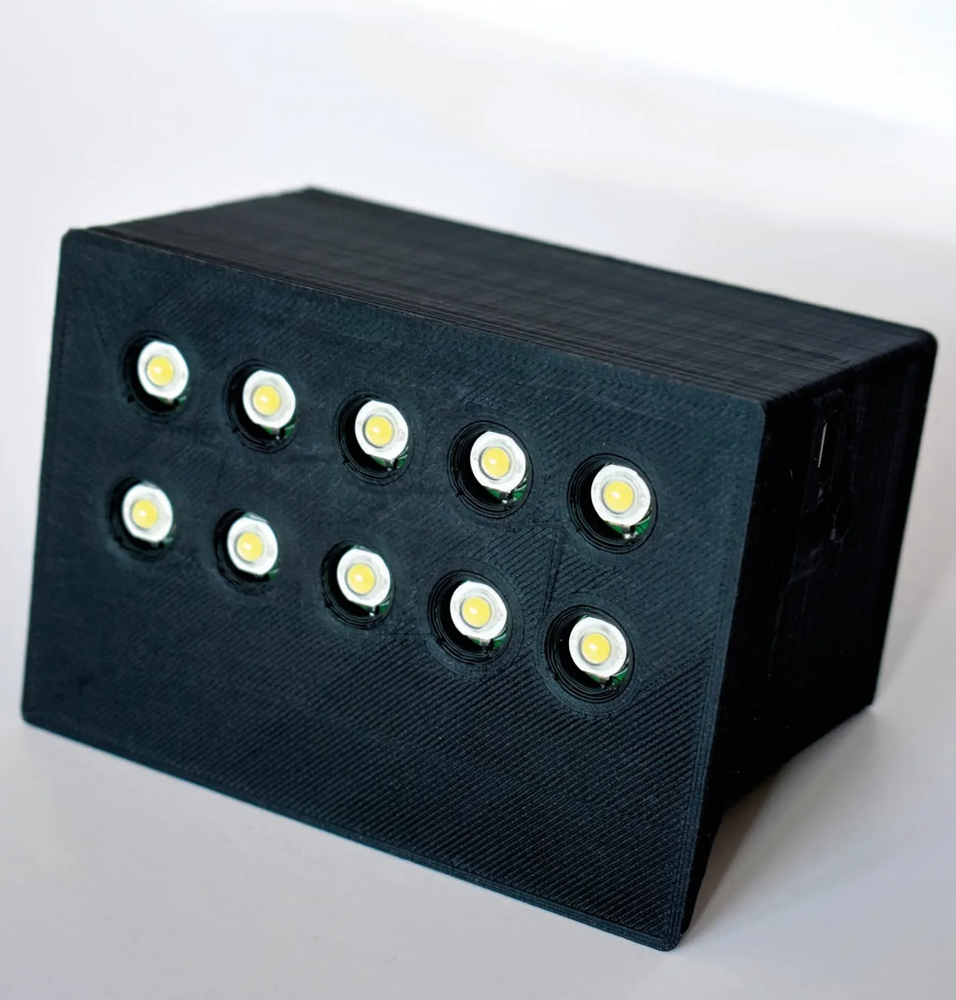
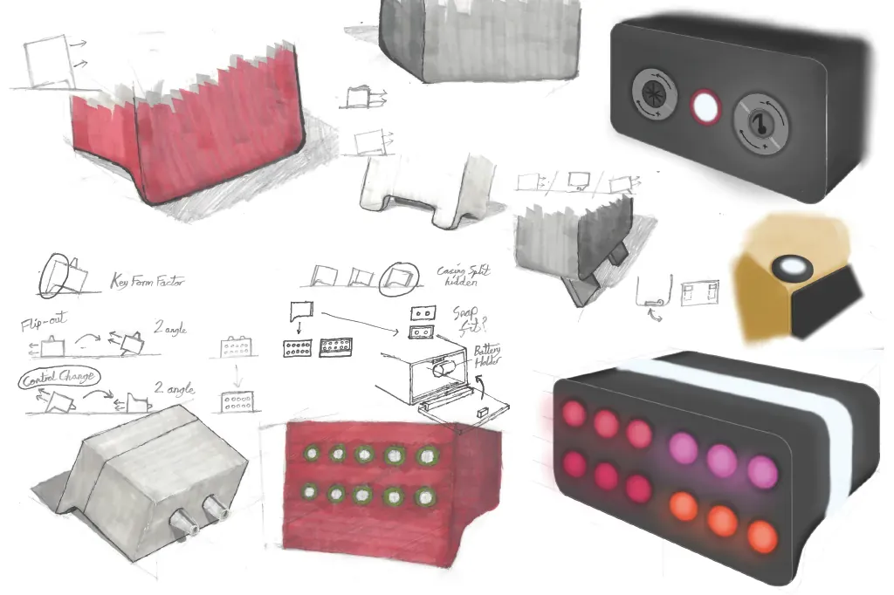
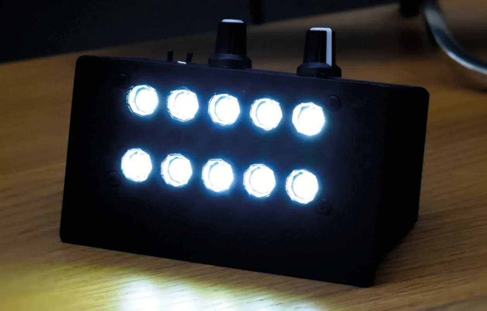
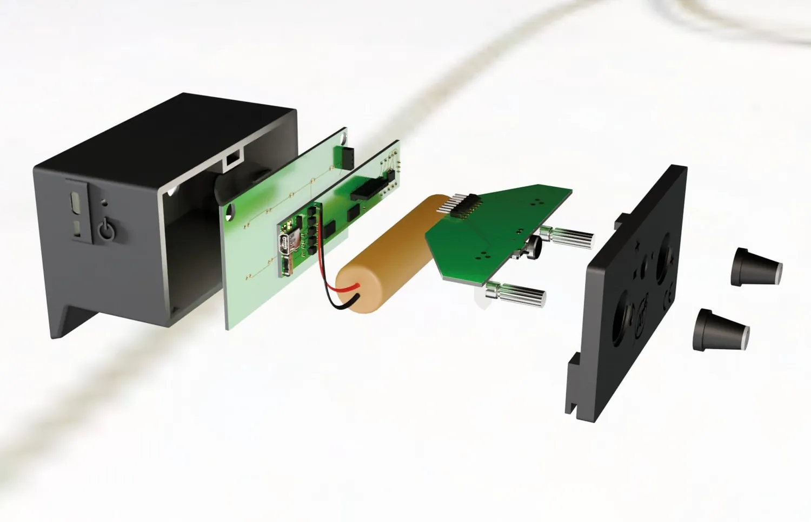
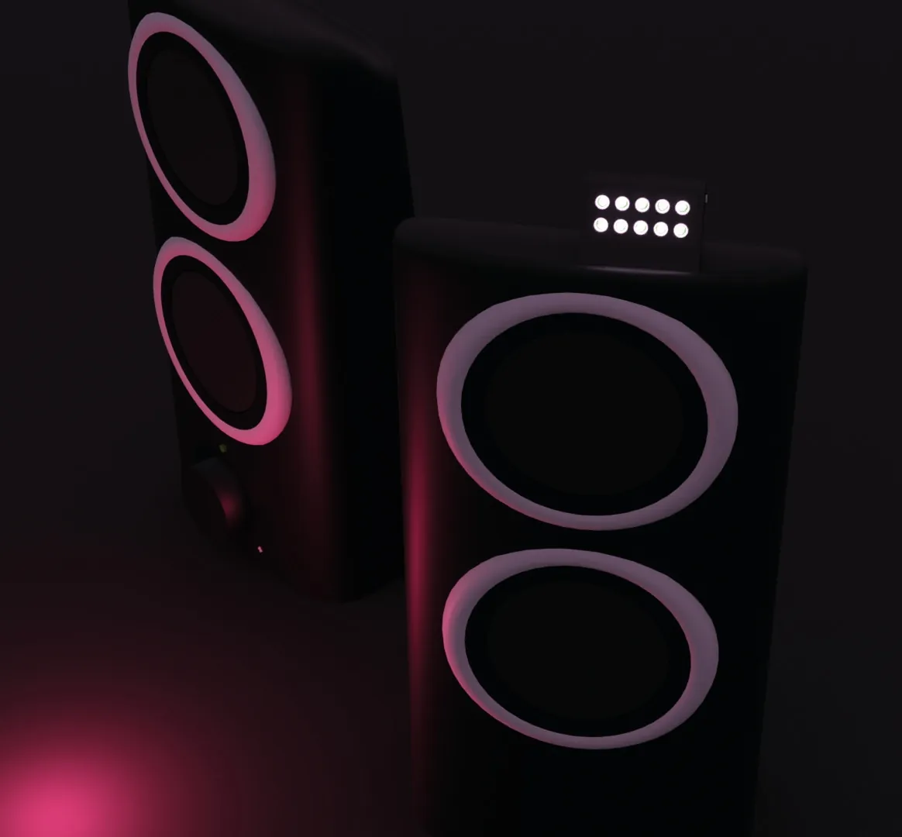
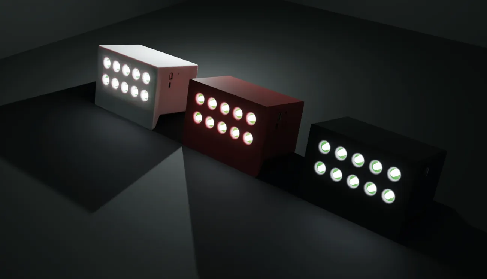

Lighting Design2019
Apollo Pod
Lighting Design and Entrepreneurship
How might we improve the small party atmosphere?

The Apollo Pod is portable, sound-reactive strobe light for small parties and events.
Houseparties often have professional quality music, with many homes containing large speakers. This promotes dancing and mimics a club atmosphere. The missing element is the lighting, with lights often switched off. Strobe lights that are programmed to the music playing give clubs the edge.
The high power LEDs allow it to light up a 5x5m area of dark room whilst still maintaining over 10 hours battery life. The controls allow it to be adjusted to different volumes and types of music. All for just £20.
Design Development


Apollo Pod V1
30 Unit Batch Production Model. The first iteration of the pod that we sold contained all the key features but had lots of room for improvement. The LEDs needed to be brighter and the controls more intuitive. We moved from separate controls for audio threshold and frequency to one control for general intensity in the sound-reactive mode, and one control for frequency of flash in the auto-strobe mode.

Apollo Pod V2
V2 greatly improves on V1 by reducing the number of parts and the assembly time, from 30 minutes to just 5. This promotes greater production speed and consequently batch volume. After iterating on the casing and AB testing features like legs and controls, I stuck with the tilted form factor that had become a defining part of V1. Batch 2 contained 50 pods.
Product Visualisation
The pod came in the 3 Apollo Tech brand colours; red, white and black. Constant prototyping meant we often had the most up to date model to take pictures and videos of in reality. Despite this, timing a good shot of the pod in a dark room was often difficult. To get around this I modeled the V2 pod, allowing us to show it in different lighting and environments. I used this to teach myself an end-to-end process from circuit design in Fusion360 to scene setup and rendering in Blender.

